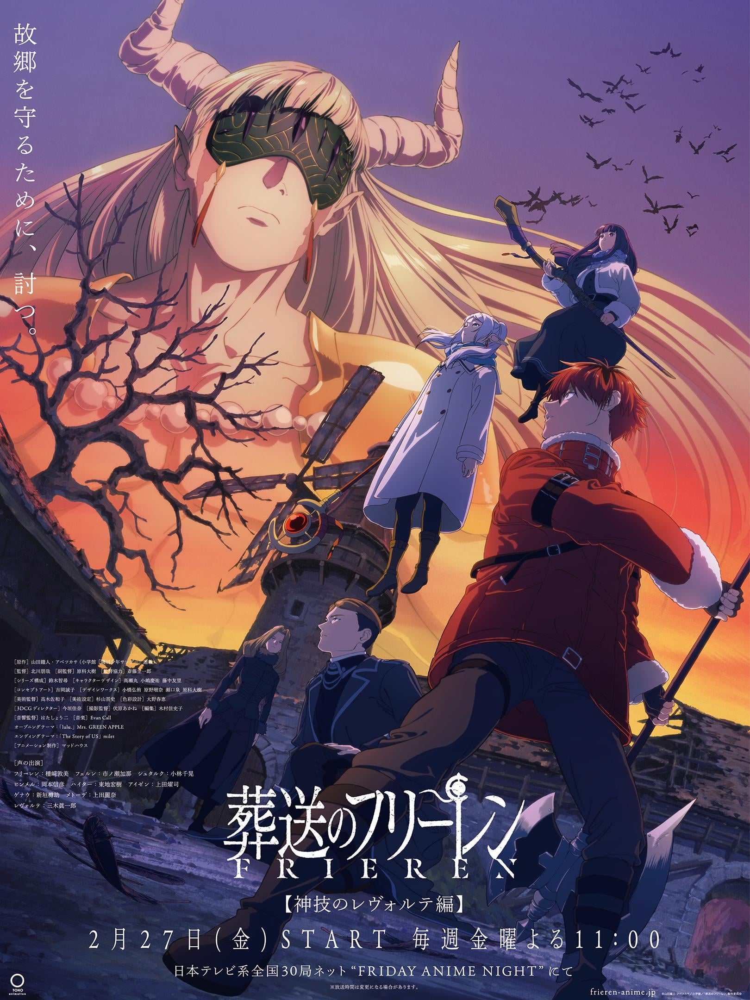

Season 1 (2023)
Decades after defeating the Demon King, Frieren revisits old memories of her late companions while taking on a new apprentice, Fern, and facing deadly mages from the past.

Season 2
Frieren, Fern, and Stark continue north toward Aureole, facing the First-Class Mage Exam and deadlier threats as they draw closer to the land of the dead.